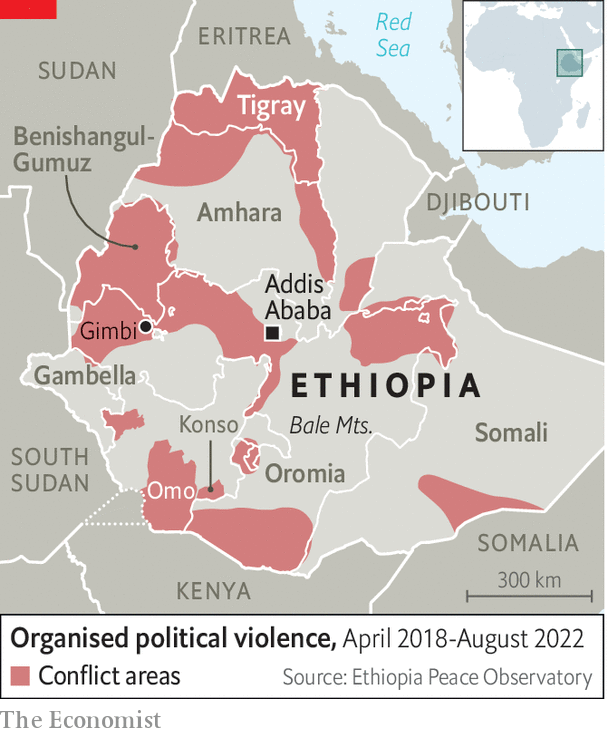
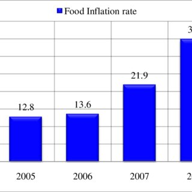
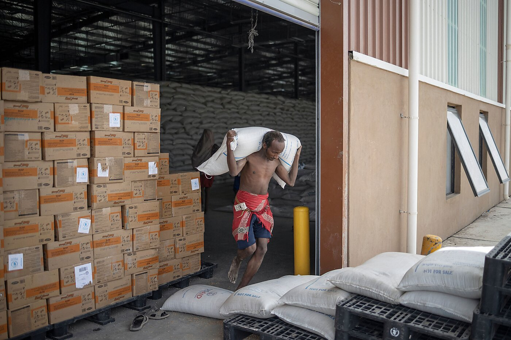

Causes of Hunger in Ethiopia

Internal Conflict
Armed conflict in regions like Tigray, Amhara, and Oromia has disrupted farming, displaced families, and limited food access.

Climate Shocks
Frequent droughts and occasional floods, worsened by climate change, have devastated crops and livestock in rural areas.

Poverty and Inflation
High food prices and low household income prevent millions from affording nutritious meals, especially in rural communities.

Barriers to Aid Delivery
Security risks, infrastructure challenges, and limited access in conflict zones often delay critical food and nutrition support.